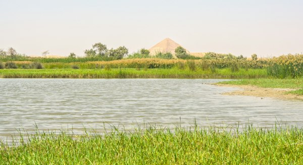

Como conhecimento, engenharia e trabalho coletivo sustentaram as primeiras grandes populações
Conheça técnicas que ampliaram colheitas, preservaram excedentes e conectaram campos distantes aos centros urbanos
Mesopotâmicos desviavam rios por diques e canais para levar água a campos distantes, ampliando colheitas em regiões de chuvas irregulares.

Uma haste com contrapeso permitia elevar água do Nilo com menos esforço e irrigar pequenas áreas acima do nível do rio.
A observação dos astros e das cheias orientava épocas de plantio e colheita, reduzindo riscos e coordenando o trabalho coletivo.
Degraus construídos em encostas controlavam a erosão, retinham água e tornavam cultiváveis terrenos montanhosos nos Andes, na Ásia e no Mediterrâneo.
Armazéns protegiam excedentes de grãos, abasteciam cidades durante secas e permitiam a cobrança de tributos para sustentar Estados e exércitos.
Uma jornada do início do cultivo ao abastecimento dos grandes impérios
Comunidades começam a domesticar plantas e animais na Crescente Fértil
Sistemas de irrigação sustentam cidades como Uruk e Ur
Excedentes do Nilo são armazenados, contabilizados e redistribuídos
Grãos, azeite e vinho circulam por portos gregos e fenícios
A annona leva trigo do Egito e do norte da África a cerca de um milhão de habitantes
A domesticação de cereais e animais permite assentamentos permanentes e a formação dos primeiros excedentes.
Irrigação, escrita contábil e grandes celeiros organizam a produção no Egito, Mesopotâmia, Indo e China.
Estradas, portos, tributos e comércio de longa distância abastecem metrópoles como Alexandria e Roma.
Assista aos vídeos selecionados para aprofundar seu conhecimento sobre produção, armazenamento e comércio de alimentos na Antiguidade